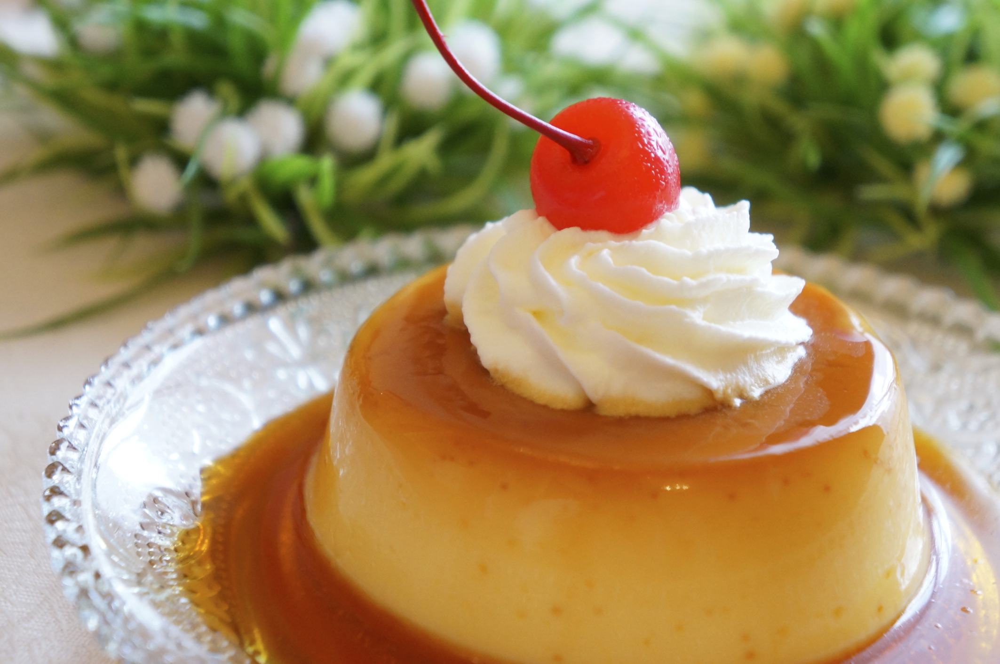

Mi receta es flan de leche y lo escoji porque me gusta mucho

Ingredientes
5 huevos
1 lata de leche evaporada
1 lata de leche condesada
2 cucharadas de vainilla
100 gramos de azucar
Pasos
En un recipiente combinar harina, azúcar, cocoa, polvo hornear, bicarbonato y sal. Revolver a baja
velocidad con la batidora.
Agregar leche, mantequilla y vainilla. Batir con batidora a velocidad baja, luego batir 2 minutos a
velocidad media, agregar huevo y batir 2 minutos más. Poner en un molde redondo de 22 cms. de diámetro,
engrasado y enharinado.
Hornear a 180 °C por 30 o 35 minutos. Sacar del horno y enfriar en una rejilla 10 minutos. Sacar del
molde y dejar enfriar completamente.
Para hacer el glaseado: derretir chocolate y mantequilla a fuego suave, remover del fuego y agregar el
azúcar glass y el agua caliente moviendo siempre. Si es necesario agregar mas de agua para tener la
consistencia de glaseado
Glasear el pastel y dejar escurrir por los lados a cubrirlo totalmente